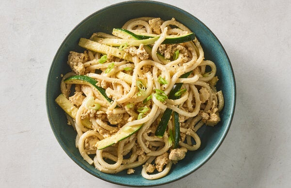

Pasta with Tofu and Zucchini (Lazy)

Description
A simple pasta dish for all occasions :)
Ingredients for one
100gr of whatever type of pasta you fancy
100gr of tofu
2 spoons of soy sauce
2 garlic cloves
1 zucchini
1 spoon smoked paprika
1 spoon olive oil
1 pot of water
Steps
Place the pot with water on the stove and start bringing it to a boil
While you wait squeeze the block of tofu with your hands in a bowl until it's roughly crumbled
Soak it with the soy sauce and smoked paprika, let it sit
Chop the garlic and zucchini to your liking
When the water boils remember to salt it and put the pasta in! Then let it boil for the amount of time indicated on the package
In a pan heat up the olive oil and let the garlic fry there a lil bit
Add the zucchini and let them cook
When the zucchini are cooked but not yet soft add the marinated tofu
If it gets too dry you can add some pasta water
When the pasta is cooked don't throw the pasta water just yet you might need some!
Add the pasta to the pan and mix it with the other ingredients, add some cooking water to your desired moistness
All done!!! Serve it up!!